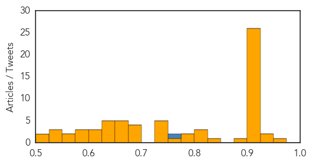

Unknown
30-Day Web Trend
0 alerts, 0 warnings

30-Day Twitter Trend
0 alerts, 0 warnings
Article Locations
Article Confidences
Top Articles:
- 0.954
- Canine Flu outbreak comes to Ohio
- 0.944
- Niger isolates suspected bird flu farm as region takes precautions
- 0.934
- Almost 60,000 People Die of Rabies Every Year, New Study Reveals
- 0.923
- Gonorrhea rates up in Humboldt County
- 0.917
- Chicago Tribune
- 0.917
- Chicago Tribune
- 0.917
- Chicago Tribune
- 0.917
- Chicago Tribune
- 0.917
- Chicago Tribune
- 0.917
- Chicago Tribune
- 0.917
- Chicago Tribune
- 0.917
- Chicago Tribune
- 0.917
- Chicago Tribune
- 0.917
- Chicago Tribune
- 0.917
- Chicago Tribune
- 0.917
- Chicago Tribune
- 0.917
- Chicago Tribune
- 0.917
- Chicago Tribune
- 0.917
- Chicago Tribune
- 0.917
- Chicago Tribune
- 0.917
- Chicago Tribune
- 0.917
- Chicago Tribune
- 0.917
- Chicago Tribune
- 0.917
- Chicago Tribune
- 0.917
- Chicago Tribune
- 0.917
- Chicago Tribune
- 0.916
- Indiana health officials suggest flu vaccinations for dogs
- 0.910
- Report links vCJD to imported British beef
- 0.904
- Rise in HFMD in Malaysia expected this year , news, Health News, AsiaOne YourHealth
- 0.885
- Indiana health officials suggest flu vaccinations for dogs
- 0.833
- Fiona Stanley Hospital patients seek testing to rule out disease
- 0.820
- Viral disease scare in PD army camp - Nation
- 0.807
- Minnesota reports increase in STDs, Syphilis up 17 percent
- 0.806
- Superbugs: What They Are and How You Get Them - Story
- 0.796
- Stay calm, keep clean as HFMD cases peak
- 0.778
- Health professionals release TB test results from Olathe Northwest High School
- 0.769
- Infection Numbers Grow To At Least 120
- 0.745
- Dog flu epidemic spreads in the Midwest
- 0.739
- Indiana Health Officials Suggest Flu Vaccinations for Dogs
- 0.734
- Hantavirus in North America: Rare but Deadly
- 0.734
- Acute diarrhea cases down in Jonglei’s Duk county
- 0.730
- Recalled California Spinach was Served at 10 South Carolina Schools
- 0.692
- No HFMD outbreak in Johor, says exco man - Nation
- 0.692
- Canine flu outbreak spreads in Midwest; no cases reported here
- 0.692
- iafrica.com Solutions to tackling obesity in Africa
- 0.687
- MaritiemeVacaturebank.nl
- 0.673
- Why Virginia vet calls Midwest dog flu ‘very concerning’
- 0.672
- Preventable rabies kills 160 people worldwide every day
- 0.668
- Ending the ‘Neglect’ in Neglected Tropical Diseases
- 0.653
- France's nuclear power giant beset by setbacks
Showing top 50 articles...
Top Tweets:
- 0.755
- FF to flu campaign partners: @AARP. Thanks for promoting flu prevention this season!
Meningitis
30-Day Web Trend
1 alerts, 0 warnings

30-Day Twitter Trend
0 alerts, 0 warnings

Article Locations

Article Confidences

Top Articles:
Top Tweets:
-
No tweets found for Apr 17, 2015